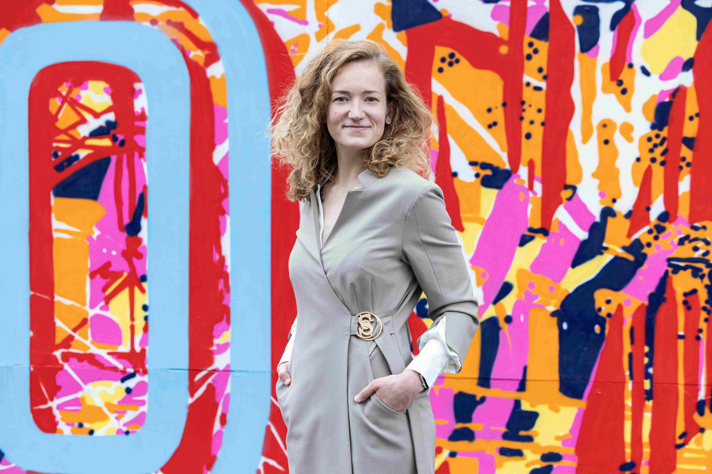

Jóga s akro-jógou
Pomalý, meditativní úvod. Partnerská akrobacie ve dvojicích. Formace 4×4.

Náčelnice ČOS · Cvičitelka · Sestra
Cvičitelka, autorka skladby Leporelo, nositelka Ceny starosty ČOS za záchranu lidského života a specialistka paliativní péče.
Biografie
Bc. Kateřina Machů (* cca 1993) propojuje ve svém životě dvě zdánlivě vzdálené oblasti — sokolskou cvičitelskou dráhu a zdravotnickou kariéru. Obě ho říká totéž: záleží na lidech, ne na strukturách.
Zdravotnická kariéra
Sokolská kariéra
Sokolská timeline
2002 — Vstup
Přichází do T. J. Sokol Praha Vršovice ve věku 10 let. Začátek celoživotního vztahu s organizací.
cca 2007 — První licence
Ve věku 15 let získává „pomahatelskou" licenci. Posun od cvičenky k vedení druhých.
cca 2010 — Vedení oddílu
Kolem 18 let přebírá vedení oddílu TeamGymu. Začíná cvičit děti a mládež ve Vršovicích.
2006, 2012, 2018 — Slety
Tři všesokolské slety jako cvičenka — zkušenost, která předchází roli autorky skladby.
Září 2023 — Metodička OV
Nastupuje jako metodička Odboru všestrannosti ČOS a vedoucí sboru dorostenek a mladších žen.
4.–5. července 2024 — Leporelo
Skladba připravená za 3 měsíce vystoupí na XVII. sletu. Cvičí 1 620 dorostenek a mladších žen.
22. června 2025 — Náčelnice
Zvolena na XIV. sněmu ČOS v Tyršově domě. Automaticky vstupuje do Předsednictva ČOS. Tandemem je náčelník Mgr. Petr Sádek.
Sokol nejsem já, ale my.
Kateřina Machů · rozhovor pro ČOS, 2025
Slet 2024
Hromadná skladba pro dorostenky a mladší ženy, připravená za pouhé tři měsíce. Oslava ženství — myšlenka, že každé tělo je jiné, ale krásné svým způsobem.
Jóga s akro-jógou
Pomalý, meditativní úvod. Partnerská akrobacie ve dvojicích. Formace 4×4.
Cvičení s podložkou
Barevná podložka (fialová/žlutá) jako náčiní a vizuální prvek. 30sekundový segment.
Centrální část
Rychlejší, elegantní pohyby na titulní píseň. Ženský, elegantní charakter.
Aerobní finále
Nejdynamičtější část. Podložky skládají tvar leporela viditelný z výšky stadionu.
Mediální obraz
Ve veřejných výstupech propojuje Machů reprezentaci vedení ČOS s konkrétní pohybovou filosofií. Nepůsobí jako funkcionářka, ale jako nositelka hodnotového rámce.
„Je fajn, že oba máme blízko ke cvičencům."
O tandemu s náčelníkem Mgr. Petrem Sádkem · ČT Sport, květen 2025
Vize 2025–2028
Machů se odlišuje od tradičního obrazu sokolského funkcionáře: zaměřuje se na konkrétní lidi a jejich životní situace, ne na abstraktní struktury.
Dorostenky a žákyně
Kategorie, které nejčastěji odcházejí při zkouškách a životních změnách. Chce ukázat, že lze dočasně přerušit a vrátit se.
Prevence zranění
Zdravotnická zkušenost z JIP a paliativy je přímým zdrojem pochopení, co pohyb a jeho absence s tělem dělá.
Mezigenerační přitažlivost
Inspiruje ji zjištění, že na Leporelu cvičily matky a dcery společně. Tento model chce přenést do dalších formátů.
Moderní komunikace
Nositelka prezentace „Jak mluvit se Sokoly o Sokole". Chce sjednotit jazyk a modernizovat tvář organizace.
Komunita bez stigmatu
Sokol jako zázemí, kam se lze vracet. Zaměřit se na to, co nás spojuje — ne na to, s čím se neshodujeme.
Regionální oddíly
Metodika musí fungovat i tam, kde není pražský zájem ani zázemí. Drobné oddíly tvoří základ živé sítě.
Zdroje
Primární zdroje pro fact-checking, redakční brief nebo tvorbu copy. Všechny informace v tomto profilu jsou z těchto zdrojů.